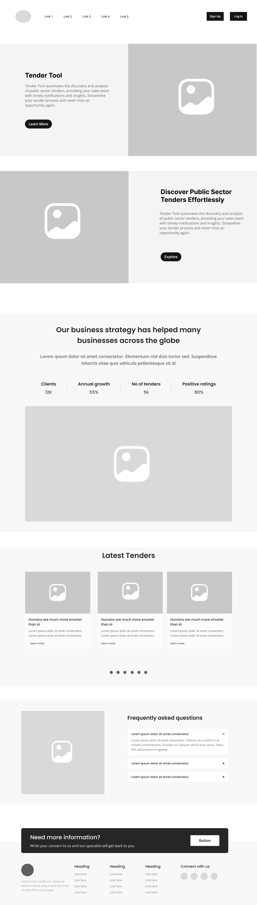
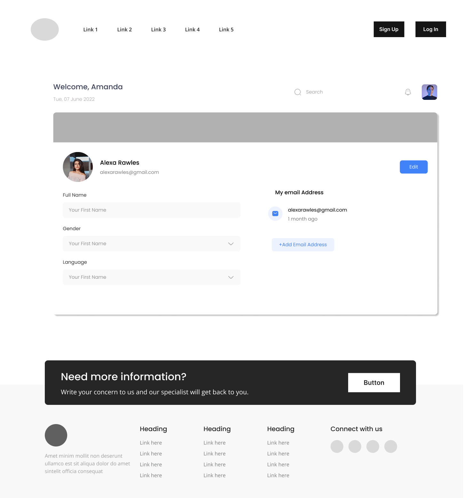
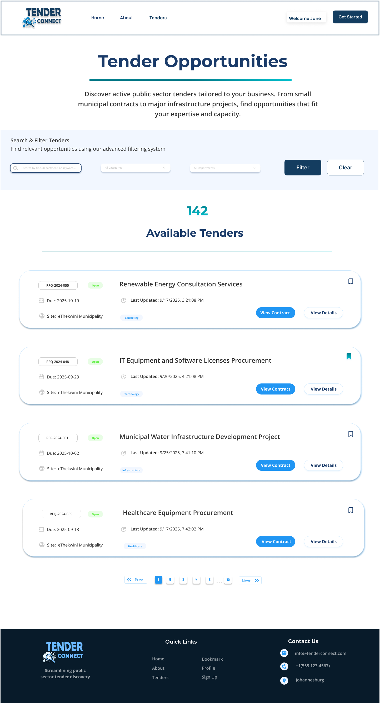

My role in this project
As both UI/UX Designer and Frontend Developer on this team project, I was responsible for establishing the visual design language, designing key screens in Figma, and building out the frontend — translating our mockups into responsive, functional HTML/CSS/JavaScript pages.
I approached every screen with the end-user in mind: how would a procurement officer, a business owner, or a platform admin actually navigate this? That thinking drove both my design decisions and my frontend implementation choices.
Design lead + frontend devHow we got there
The problem we set out to solve
"Small and medium-sized businesses in South Africa struggle to find, apply for, and track government tender opportunities — the process is fragmented, bureaucratic, and intimidating."
Our brief asked us to design and build a procurement platform that makes tendering accessible. From the start, I pushed for us to think beyond just a listings page — real users needed to register their businesses, track application status, communicate with administrators, and get intelligent help navigating the process.
I led early discovery sessions with our team, mapping out who would actually use this platform and what their mental models looked like.
Three User Types
We identified Businesses looking for tenders, Administrators managing the platform, and Public Users browsing opportunities. Each needed a completely different experience.
The Complexity Gap
Existing solutions were either government portals (dense, dated) or expensive SaaS tools. We needed to bridge this — powerful enough to be useful, simple enough for first-time users.
Time Pressure
Tender deadlines are strict. Users told us the biggest pain point was missing opportunities because they couldn't track timelines. This became a core design priority.
Building the visual language
I established the design system before touching any screen layouts. Colour, type, and component decisions made early would ripple through all 9 pages — getting this foundation right was non-negotiable.
TenderConnect Colour Palette
Typography
Display / HeadingsSerif, authoritative — conveys reliability and professionalism in a government-adjacent context
Body / UI LabelsGeometric sans-serif, highly readable — ideal for data-dense procurement information
Type ScaleH1 40px · H2 28px · H3 20px · Body 16px · Label 13px · Caption 11px
Five choices that shaped the product
Every design decision was deliberate. Here are the ones I'm most proud of — the moments where UX thinking directly improved the experience.
Role-based dashboards instead of a single home
Rather than showing all users the same homepage, we designed three distinct authenticated dashboards. A business user sees their tender applications and deadlines. An admin sees pending approvals and platform stats. This made the platform feel personal and reduced cognitive load — users only saw what was relevant to them.
Plain-language status labels with visual hierarchy
Tender statuses like "Pending Evaluation" and "Awarded" needed to be scannable at a glance. I designed colour-coded status pills with short, plain-English labels — removing government jargon that confused users during our team reviews. Green for active, amber for pending, red for closed.
Progressive disclosure in business registration
Registration for a business tender platform requires collecting a lot of information — company details, tax numbers, director info. Rather than presenting one overwhelming form, I broke this into a stepped wizard with a clear progress indicator. Each step had a single focus, reducing drop-off and user anxiety.
Contextual chatbot placement within tender views
We integrated a Gemini AI chatbot to help users understand tender requirements. Rather than a floating chat bubble (easy to ignore), I embedded it contextually in the tender detail sidebar. It appeared where users were most likely to have questions — not as an afterthought.
Bulk action patterns for admin efficiency
Early admin designs had individual action buttons per row. After watching our team simulate admin tasks, I redesigned to include checkbox selection and bulk actions — approve multiple applications, export data sets. This cut the number of clicks for common admin workflows by roughly half.
Low-fidelity wireframes
Before touching colour or code, I mapped out the core screens as low-fidelity wireframes — focusing purely on layout, hierarchy, and user flow. These grounded the team's decisions and gave us a clear structure to iterate on before moving to high-fidelity design.




High-fidelity prototype
After wireframes were signed off, I applied the full design system — brand colours, typography, iconography, and real content — to produce the high-fidelity prototype. These screens went directly into the React build.




What we shipped
Landing & Marketing Pages
Public-facing pages to attract and inform potential business users about the platform.
Business Registration Flow
Multi-step company onboarding with document upload and validation.
Tender Listings & Filters
Searchable, filterable directory of open tenders with deadline tracking.
AI-Powered Chatbot
Gemini AI integration to help users understand tender requirements and eligibility.
Admin Control Panel
Full platform management: approve businesses, manage tenders, view analytics.
Notification System
Real-time alerts for application status changes, new tenders, and deadlines.
What I learned
Key takeaways
- Design systems pay dividends — establishing tokens early meant the team built consistent UI without constant check-ins
- Testing with teammates (not just the person who designed it) surfaced assumptions I didn't know I had
- Role-based UX is fundamentally different work — each user type deserves its own design thinking, not just a filtered view
- Collaboration between design and backend early prevents painful late-stage redesigns
If I were to revisit this
- Conduct user interviews with actual SME business owners before finalising the information architecture
- Introduce accessibility testing earlier — colour contrast and keyboard navigation were addressed late
- Add a mobile-first approach from the start — our initial designs were desktop-centric
- Use a component library like shadcn or MUI for faster, more consistent frontend iteration